This chapter moves governance into the places engineers already work: pull requests, release gates, runtime checks, and incident review.
Industry Solutions Whitepaper Series
Part 2 defined control evidence in regulated operations. Part 3 moves into engineering delivery systems where debt is either prevented or reintroduced.
Cloud debt becomes expensive when governance remains a monthly reporting activity instead of a delivery-time control. Part 3 defines where governance checks belong in engineering systems and how to keep those checks fast enough for real release cadence.
1) The delivery gap: optimization discovered too late
Teams often run cost scans after incidents or billing alarms. That timing guarantees reactive behavior. By the time a weekly report surfaces idle artifacts, the release that created them is already history. Ownership is blurred, context is lost, and remediation competes with new sprint commitments.
The practical fix is to split checks across three timing layers:
- Commit-time or PR-time: policy linting for obvious anti-patterns and missing lifecycle tags.
- Scheduled runtime scan: drift detection across real accounts after deployment activity.
- Release closeout: evidence validation that high-risk findings have owners and planned resolution windows.
This layered model keeps teams honest. PR checks catch obvious mistakes early, runtime scans reflect the real account state, and closeout checks make sure findings are assigned before everyone moves on.
2) Pipeline gates that teams will not bypass
Pipeline gates fail when they are too weak to matter or too heavy to tolerate. In cloud governance, the gates that survive are short, deterministic, and easy to explain:
- Tag completeness gate: owner, environment, and retention intent required for deployable resources.
- Policy severity gate: block only high-confidence violations; warn on low-confidence heuristics.
- Exception expiry gate: temporary bypass requires explicit expiry date and approver identity.
The anti-pattern is “block everything unless manually approved.” Teams quickly learn to game that model with broad exception scopes. Better to keep hard-fail lanes narrow and enforce tight exception expiration.
When introducing gates, start with measurement mode for one sprint. Publish false-positive rates per rule. Rules with unclear precision should not become hard blockers yet. This step builds trust and avoids defensive behavior from delivery teams.

3) Runtime guardrails: provider limits, retries, and deterministic failure classes
Engineering teams trust governance systems only when failure behavior is predictable. Runtime controls therefore matter as much as policy content. Three controls are foundational:
- Bounded concurrency: maximize throughput while respecting provider API limits.
- Retry taxonomy: distinguish transient provider failures from policy or authorization failures.
- Deterministic result states: success, partial-success, blocked, and unknown states must be explicit.
Without this structure, teams interpret scan variability as product instability. Once trust drops, operators stop routing decisions through governance workflows and return to ad-hoc scripts.
For larger estates, separate scan scheduling by account criticality. High-change environments run tighter intervals with narrower scope. Stable environments run broader scans with relaxed cadence. One global schedule usually creates avoidable load spikes and unclear prioritization.
4) Ownership routing in engineering language
Governance findings should map to service ownership, not only cloud-account ownership. A single account often hosts multiple teams and release trains. Routing by account alone creates ticket ping-pong.
An effective routing model uses two keys: service boundary and finding class. Example: orphaned snapshots from data services route to database platform owners; idle load balancers route to edge or networking owners. This split lowers reassignment churn and shortens closure lead time.
If your organization has no stable service-owner map yet, start with an interim matrix in the evidence packet. Even a manually maintained owner matrix is better than account-level ambiguity.
5) Verification design: prove prevention, not only cleanup
Most teams celebrate total “savings identified.” Mature teams track recurrence rates by finding class. If the same class reappears every sprint, governance has not improved; only cleanup workload has increased.
Recommended verification set:
- Recurrence rate per finding class (four-week rolling window).
- Median closure lead time by owner group.
- Exception expiration compliance rate.
- Ratio of potential savings to realized savings within defined windows.
These measures connect engineering behavior to financial outcomes. They also reduce argument cycles between platform and finance because both functions can inspect the same trend definitions.
6) Provider rate limits: operational engineering details
Rate-limit behavior is where many governance integrations fail silently. Teams configure high parallelism in test accounts, then encounter throttling in larger estates and assume the scanner is unreliable. The fix is not simply lowering concurrency. It is managing concurrency as a policy with feedback from real runtime behavior.
A sturdier pattern is account-bucket scheduling: group accounts by change intensity and API sensitivity, then apply bounded worker pools per bucket. When transient throttling appears, widen backoff only for the affected bucket. The rest of the scan should keep moving.
Teams should also track retry inflation ratio as an operational metric. If retry volume rises without corresponding finding volume growth, capacity policy needs tuning before quality degrades.
7) Change-failure handling and rollback confidence
Governance workflows need explicit failure semantics. A failed action is not the same as a failed scan. A failed action should preserve context: what was attempted, by whom, with which prerequisite checks, and what rollback decision followed. Without this chain, teams lose trust in closure metrics.
A practical model is to classify failures into four buckets: authorization failure, dependency conflict, provider transient, and policy mismatch. Each bucket should map to a next action owner. This removes ambiguity and reduces “stuck in triage” states.
When rollback is required, closure should remain open until post-rollback validation confirms the environment returned to expected state. Marking rollback as closure can hide recurring debt classes and distort recurrence metrics.
8) Team adoption strategy for guardrail programs
Engineering adoption improves when guardrails are presented as reliability controls, not only cost controls. Developers respond faster when they see concrete impact on release quality: fewer emergency cleanups, fewer ownership disputes, and shorter post-release review cycles.
Start with a small set of high-confidence rules and publish a monthly “rules kept vs rules tuned” note. This transparency shows that governance is an engineering system that can evolve, not a static compliance burden. Over time, it builds the credibility needed to expand rule coverage.
9) Cost of control vs cost of recurrence
Engineering leaders often ask whether guardrail overhead outweighs savings. The wrong way to answer is by comparing one scan run cost to one avoided artifact. The right comparison is recurrence economics: how many repeated cleanup cycles are avoided once a class is prevented at source.
For example, if an idle network resource class reappears every sprint, the recurring triage, ownership reassignment, and post-change verification time can exceed direct cloud spend impact. Guardrails reduce both cash waste and coordination waste. This is why programs with moderate immediate savings can still deliver high organizational return.
To keep this transparent, publish a quarterly “prevention dividend” note: classes with reduced recurrence, estimated engineering hours reclaimed, and observed reduction in exception churn. These indicators help product leadership understand why governance belongs in delivery budgets, not only in finance reviews.
Industry Pain Signals and Required Outcomes
SaaS and internet teams. Pain signal: recurring debt classes after each sprint despite good dashboards. Required outcome: CI and post-release guardrails that prevent regeneration at source.
Fintech and payments. Pain signal: strict controls increase lead time when runtime failures are ambiguous. Required outcome: deterministic failure classes and rollback-safe closure states.
Healthcare. Pain signal: operators hesitate to automate because exception boundaries are unclear. Required outcome: clear risk lanes and evidence-backed approval triggers.
Manufacturing and retail. Pain signal: large account estates hit provider throttling during global scans. Required outcome: bucketed scheduling with bounded concurrency and retry governance.
Implementation Checklist for Part 3
- Deploy a three-layer timing model: PR checks, scheduled scans, release closeout.
- Use strict hard-fail gates only for high-confidence policy violations.
- Classify runtime failures into deterministic states and expose them in reports.
- Route findings by service boundary plus finding class, not account alone.
- Track recurrence as a first-class KPI to prove prevention maturity.
Related Internal References
- Part 2: control evidence and review governance baseline.
- API Playbooks: automation patterns for scheduled or scoped execution.
- Metrics Definition: normalized KPI semantics for recurrence and closure metrics.
- Roadmap: release-line context for rollout phases and operational scope.
Next Chapter
Continue to Part 4: Industry Playbooks for Finance, SaaS, and Platform Teams to map these controls into real operating models and team-specific execution rhythms.